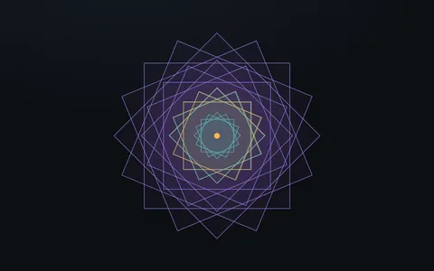
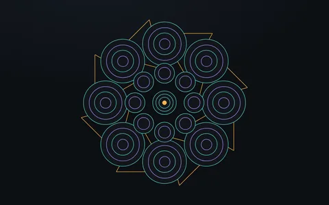
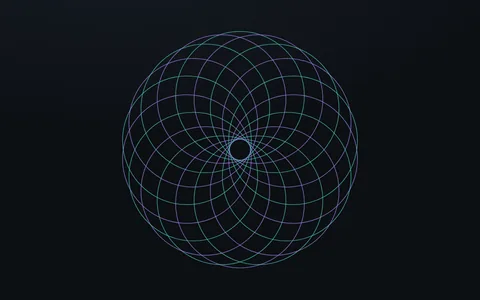

Mandalas
Mandalas are repetition and nesting, which is what Orbit does: put copies of a satellite on a ring and they spread evenly; put a system inside a satellite and it gets its own center. Everything here is <div> elements with borders.

Geometric square mandalaNested squares, copied and turned; one to eight folds.
Radial symmetry mandalaRings of circles with six, eight or twelve folds.
Starter patternsA hexagonal flower and a rosette.
Starter patterns
Hexagonal flower
Six circles around a hexagon. The hexagon is six .side elements on the outer ring of a system nested in the center satellite.
- Circles on
orbit-5with--o-size-ratio: 10pass through the center and touch their neighbors' centers: the flower of life. - Sides connect the places of neighbors on a ring, so six of them on
orbit-12of the nested system draw a hexagon that fits its satellite. See sides.
Rosette
Large circles on one small ring overlap into a rosette. Drag the slider: Orbit respaces them as their number changes.
- Every circle is twelve lanes wide on a ring of radius five, so each one reaches past the center to the other side. The count only changes the angle between them.